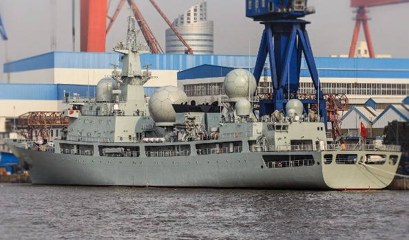

2015-02-04 00:45:00
自從上次刷新小道消息，又過了三個月了，在此把新消息作個總結。
在海軍方面，017號航母仍然没有上船台；顯然我低估了訂購部件和製造分段所需的時間。大連造船厰的最大船台在去年年底造完一艘民船後，又上了另一艘同型號的船隻。一名造船厰内部的軍迷透露，這艘船訂於今年五月前下水，所以017號應該是在五月前上船台。017號的建造是2013年八月、九月間啟動的，所以再怎麼拖，今年之内必然得開始組裝了。前两天台灣媒體引用香港報紙的猜測，說017號的排水量將有7、8萬噸，比遼寜號的5.5萬噸大得多，這是錯的：017號沿用遼寜號的船殼和動力系統，只把内部的隔艙布局重新設計，噸位增加非常有限。下一艘018號才會有全新船殼，這可以從它的型號002看出來（遼寜號是001，017號是001A）。
航母是遠程攻勢作戰的工具。從戰略上看，中共海軍在未來十年内，仍將以守勢作戰為中心，所以航母不是效費比最高的武器。不過航母的有效使用，需要至少15-20年的探索和訓練，未雨綢繆也就是共軍在這十年内將再建造大約三艘新航母的原因。我的估計是大概每4-5年會看到一艘新航母上船台。
雖然航母進度慢於我原先的估計，所有其他的艦隻卻都比我預估的快。055級在2014年十二月正式開建，所以今年内應該會上船台（有争議）。第一艘071A兩棲攻撃艦（詳見前文《中共海軍的兩棲攻撃艦》）不但上了船台，而且已經於2015年一月22日在上海滬東造船厰下水。同一天在滬東下水的還有一艘815級AGI（Auxiliary General Intelligence，電子偵察船）。815級排水量6000噸，這是中共海軍的第四艘。早一個月（2014年十二月21日）廣州造船厰下水了共軍的第七艘903級AOR（Auxiliary Oiler Replenishment，油料補給艦），這型補給艦排水量20500噸，足以滿足除了航母戰鬥群以外的遠洋艦隊補給任務。一艘很大的新型AOR剛剛在廣州上了船台，它的噸位和編號還不確定，但是可能是為航母戰鬥群設計的。美軍有四艘48000噸級的T-AOE（Fast Combat Support Ship，快速戰鬥支援艦），如果共軍的航母戰鬥群要在遠洋作戰或訓練，40000噸級以上、能長期以25節航速跟上戰鬥群的巨型補給艦是絶對必要的。

剛下水的第四艘815級AGI。美軍有全球部署的基地，電子監聽站早已把中、俄两國團團圍住，不需專用的AGI。
中共海軍另一項重要的進展是拖曳式變深主/被動聲吶（CAPTAS ，Combined Active/Passive Towed Array Sonar）。這項新技術最早在去年出現在056A級輕型護衛艦上，隨後054A++（詳見前文《054A級護衛艦》）也裝備了。不過世界上原本只有法國的Thales公司才有CAPTAS，其中又分為3000噸以上護衛艦使用的CAPTAS-4（英國編號2087，法國編號UMS4249，系統重39噸，已裝備法意合建的FREMM護衛艦和英國的Type 23）和為輕型護衛艦設計的緊湊型CAPTAS-2（法國編號UMS4229，系統重16噸，已裝備挪威海軍的NNF），所以共軍的CAPTAS極可能也分輕重两型，分别裝備056A和054A。CAPTAS對潜艇的偵測能力遠勝上一代的拖曳式被動聲吶（例如國軍20多年前隨康定級護衛艦從Thales購買的ATAS），我預期目前使用上一代拖曳聲吶的16艘早期型054A在進厰大修時，也會改裝CAPTAS。這將使共軍的反潜能力有飛躍性的進步，大幅增加美日潜艇在大陸近海執行任務的困難。
在空軍方面，Y-20大型運輸機已經進駐北方進行寒帶飛行試験（即漠河機場，近日氣温可能會降到攝氏零下37度；昨日Z-18和Z-20两種直升機的原型機也出現在漠河），進展似乎十分順利。J-20的最新原型機2015號在上個月初首飛成功；有趣的是它的尾椎做了切尖處理，這可能是為了雷達隱身能力而做的小修正。過去一年内一共出現了四架201x系列的原型機，考慮到原型機的總數量應該是8-12架，J-20在2017年定型進入批量生產似乎没有問題。由於隱身戰機的造價太高，在J-20批量服役之後，共軍的主力仍應會包含相當數目的非隱身戰機，因此共軍的J-10和J-11系列的後續發展還是很重要的。上個月有一張14架J-10B列隊合照的圖片出現，這是第一批次的生產型J-10B，已經有了中共空軍的標準塗裝，應該很快就會加入共軍序列。J-10B的原型機在2008年首飛，量產型則自2013年十二月開始出現，序號為101至110。去年卻又出現了一架序號為201的量產型原型機，在外觀上它只增加了新天線，所以航電應有升級，此外並無不同；網絡有人開始稱之為J-10C。原本我覺得證據太弱，不能武斷地決定它是一種新型號，不過最近有新消息支持這種看法，亦即2008年時，共軍的AESA技術還未成熟，因此J-10B用的還是PESA雷達（參見前文《雷達與隱身技術之間的矛盾關係》）。一旦AESA被搞定，自然後續批次就該改為AESA，所以序號201的原型機就是第一架配備了AESA雷達的J-10，如此一來，雖然機體結構和動力系統都没有變，航電和雷達已經升級換代了，所以編號改叫J-10C也就合理。最近中共提到J-10B的官方八股在講到雷達時，總是扭扭捏捏地說是“相控陣”而不是“主動陣”，間接地印證了這個理論。
說到雷達，J-10C並不是唯一換裝AESA的戰機，仿自SU-30的J-16也裝上了AESA。不過J-16的原型機試飛進展很慢，不能排除瀋飛（瀋陽飛機設計所，又稱601所）在逆向仿製SU-30的飛控系統時，在軟體方面遭遇到重大困難的可能。我覺得沈飛這個扶不起的阿斗相當不可靠，共軍應該還是須要引進SU-35。最近的消息是俄國因為受西方制裁和原油價格的雙重打撃，在談判上有了新的彈性，合約已基本敲定（參見前文《共軍小道消息增補：Su-35》），包括24架SU-35，並使用中共提供的航電和武器系統。
中共空軍在技術上的最大短板仍然是引擎，最近在這方面的新消息是一月9日中航工業成發有限公司宣稱的渦扇-18A試飛成功。渦扇-18A是渦扇-18的升級版，而渦扇-18則是成發（成都發動機所）仿製俄國的D-30KP2的成果。D-30KP2原本是IL-76系列用的引擎，中共在1990年代引進IL-76和IL-78時，也獲得了D-30KP2，隨即開始仿製。D-30KP2並不先進，涵道比不大，因此在推力和省油性上都比不上最新的大涵道引擎，不過也正因這様，它的直徑够小，可以用來升級1950年代設計的H-6系列，再加上新式的Y-20也需要中共還做不出來的大涵道引擎，結果共軍的總需求量相當可觀。成發做出渦扇-18後，共軍並没有裝備，而是用它為籌碼來和俄國人談判，最後减價買了200具D-30KP2。Y-20的理想引擎是有大涵道比的渦扇-20，不過渦扇-20還没有定型，仍然有些技術風険，所以技術層次較低的渦扇-18A應該是備用的Plan B。如果渦扇-20開發成功，渦扇-18A將只能用在H-6系列上。H-6的設計實在太落後了，只怕生產數量在被下一代隱身轟炸機取代之前是很有限的。
【後註】廣州造船厰的新AOR越來越像是一艘904A級的補給艦。904A級只有10000多噸，適合用來補給南海諸島。看來40000噸級的大補還需要一段時間。